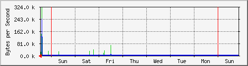
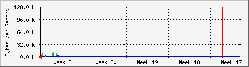
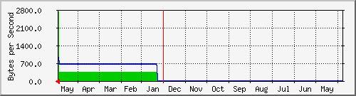

Traffic Analysis for 704 -- SW-12.126-DRL.Rack01.finanzas.df.gob.mx
| System: | SW-12.126-DRL.Rack01.finanzas.df.gob.mx in Proxmox-10.1.250.* |
| Maintainer: | alberto <luis.a.lol@outlook.com> |
| Description: | GigabitEthernet6/37 LLEGADA_AXTEL |
| ifType: | ethernetCsmacd (6) |
| ifName: | Gi6/37 |
| Max Speed: | 125.0 MBytes/s |
| Ip: | No Ip (No DNS name) |
Estadísticas actualizadas el Lunes 31 de Mai de 2021 a las 11:25,
'SW-12.126-DRL.Rack01.finanzas.df.gob.mx' ha estado funcionando durante 76 days, 19:41:03.
Gráfico diario (5 minutos : Promedio)

|
Máx |
Promedio |
Actual |
| Entrante: |
1434.1 kB/s (1.1%) |
9216.0 B/s (0.0%) |
1421.0 B/s (0.0%) |
| Saliente: |
1416.7 kB/s (1.1%) |
4731.0 B/s (0.0%) |
938.0 B/s (0.0%) |
Gráfico semanal (30 minutos : Promedio)

|
Máx |
Promedio |
Actual |
| Entrante: |
323.4 kB/s (0.3%) |
2417.0 B/s (0.0%) |
6618.0 B/s (0.0%) |
| Saliente: |
240.0 kB/s (0.2%) |
1396.0 B/s (0.0%) |
2748.0 B/s (0.0%) |
Gráfico mensual (2 horas : Promedio)

|
Máx |
Promedio |
Actual |
| Entrante: |
124.4 kB/s (0.1%) |
874.0 B/s (0.0%) |
124.4 kB/s (0.1%) |
| Saliente: |
63.6 kB/s (0.1%) |
836.0 B/s (0.0%) |
63.6 kB/s (0.1%) |
Gráfico anual (1 día : Promedio)

|
Máx |
Promedio |
Actual |
| Entrante: |
2716.0 B/s (0.0%) |
393.0 B/s (0.0%) |
2707.0 B/s (0.0%) |
| Saliente: |
904.0 B/s (0.0%) |
652.0 B/s (0.0%) |
904.0 B/s (0.0%) |
| VERDE ### |
Tráfico entrante en Bytes por segundo |
| AZUL ### |
Saliente:going Traffic in Bytes per Second |